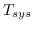

Next: Generating Visibilities from a Up: Generating Dummy Visibility Data Previous: Generating Dummy Visibility Data
Simulating a telescope approximately, let alone in some detail, requires a good many parameters. uvgen takes an appreciable number of parameters and input files to describe the telescope, correlator and source. Fortunately keyword and set-up files for some common situations exist (e.g. simulating the ATCA and VLA). Also the defaults are usually sensible.
Some inputs to uvgen, and typical values for the ATCA, are given below. Note that these are not the default values.
| UVGEN | |
| source= | Source description file - see help file. |
| ant= | Antenna location file - see help file. |
| baseunit=-51.02 | Basic antenna increment (15m) in nanosec, |
| for coorinates in a topocentric system. | |
| corr=0,1,0,104 | Correlator model - see help file. |
| spectra= | Spectral line model - see help file. |
| ellim=12 | Telescope elevation limit. |
| telescop=atca | Telescope name - see help file. |
| stokes=xx,yy,xy,yx | ATCA measures linear polarisations. |
| lat=-30 | Latitude of Narrabri. |
| radec= | Source RA and declination, in hours and degrees. |
| systemp=50 | Typical receivers have a  of 50 K |
| pbfwhm= | Primary beam size? Varies with frequency |
| leakage=2 | Typical polarisation leakage |
| jyperk=12.7 | System gain is about 12.7 Jy/K |
| pnoise= | Rms antenna phase variation |
| gnoise= | Rms antenna amplitude gain variation |
These typical values for the ATCA, and also the VLA, can be found in
in `keyword' files, found in the $MIRCAT directory.
| Telescope Keyword Files | |
$MIRCAT/uvgen.def.atca |
Typical uvgen parameters for the ATCA |
$MIRCAT/uvgen.def.vla |
Typical uvgen parameters for the VLA |
miriad
shell using the source command.
For example, to load typical parameters for the ATCA, use
miriad% source $MIRCAT/uvgen.def.atca
By leaving some of uvgen's parameters unset (e.g. leakage, systemp, pbfwhm) you get an idealised telescope (no polarisation leakage, no receiver noise, no primary beam effects). Additionally there is no reason why you cannot request an ATCA-like telescope to produce Stokes I or circular polarisations!
The source and antenna description files are described in the
help for uvgen, as are a number of other parameters needed in the
simulation process. There are, however, a collection of description
files for common situations. These are all kept in the $MIRCAT
directory.
| Source Description File | |
| File | Description |
no.source |
Nothing! No source at all |
point.source |
A 1 Jy unpolarised point source, at field centre |
poff.source |
A point source offset from the field centre |
qpoint.source |
A 1% linearly polarised point source |
spiral.source |
A spiral |
| Antenna Description File | |
| File | Description |
h75.ant |
ATCA configuration H75 |
h168.ant |
ATCA configuration H168 |
h214.ant |
ATCA configuration H214 |
0.122.ant |
ATCA configuration 0.122A |
ew214.ant |
ATCA configuration EW214 |
ew352.ant |
ATCA configuration EW352 |
ew367.ant |
ATCA configuration EW367 |
0.375.ant |
ATCA configuration 0.375 |
0.75a.ant |
ATCA configuration 0.75A |
0.75b.ant |
ATCA configuration 0.75B |
0.75c.ant |
ATCA configuration 0.75C |
0.75d.ant |
ATCA configuration 0.75D |
1.5a.ant |
ATCA configuration 1.5A |
1.5b.ant |
ATCA configuration 1.5B |
1.5c.ant |
ATCA configuration 1.5C |
1.5d.ant |
ATCA configuration 1.5D |
3.0a.ant |
ATCA configuration 3.0A or 6.0A |
3.0b.ant |
ATCA configuration 3.0B or 6.0B |
3.0c.ant |
ATCA configuration 3.0C or 6.0C |
3.0d.ant |
ATCA configuration 3.0D or 6.0D |
vla_a.ant |
VLA configuration A |
vla_b.ant |
VLA configuration B |
vla_c.ant |
VLA configuration C |
vla_d.ant |
VLA configuration D |
Given the various standard keyword and description files kept in the
$MIRCAT directory, it is not particularly difficult to set up the
inputs to uvgen.
For example, to simulate the `spiral' source using configuration
3.0A, in a continuum mode, you would give the following commands
to the miriad front-end:
miriad% source $MIRCAT/uvgen.def.atca miriad% source = $MIRCAT/spiral.source miriad% ant = $MIRCAT/3.0a.ant miriad% inp uvgenand then set or unset other parameters as desired.
If you wish to model a particular telescope, the task telepar contains a database of telescope characteristics.
For models which are more complex than those that can be readily simulated with uvgen, one approach is to generate the visibilities are the appropriate u-v tracks, and then to use the task uvmodel to compute the visibilities, on those tracks, of a particular image model.